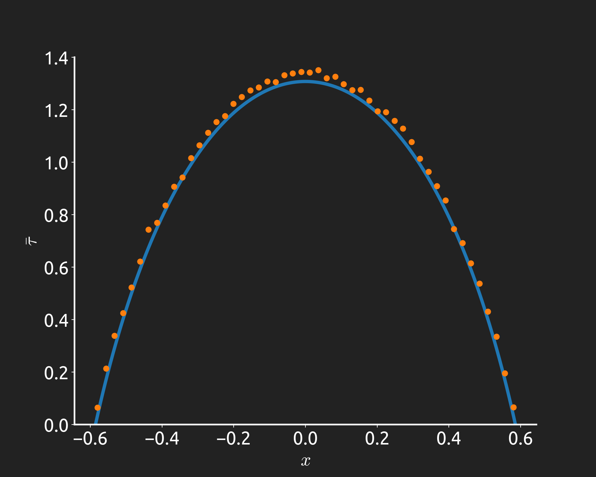

Stochastic Active Flows
Stochastic Kinematic flows and synchronisation rising from interacting particle systems
Jeremy Worsfold
Supervised by Tim Rogers and Paul Milewski
- Interacting Particle Systems
- Swarming and Diffusion
- Synchronisation
- Future Work
Formation of Traffic Jams
- We have a finite number of cars
- Clearly they do not make perfect decisions otherwise we wouldn't see a jam
- Can we come up with simple rules to explain the jams forming and general behaviour
Synchronisation of Fireflies
- Not only are we interested in fluid-like flows, we are interested in synchronisation
- These are fireflies, they start of flashing at random times
- Slowly they "nudge" each other to synchronise up their flashes
Generalised model of interacting particles
Vehicles/Organisms are $N$ particles with positions $X_n\in[0,2\pi]$ for $n=1,\dots,N$
From small scale to large scale
Introduce a concept of density of particles: $$ \varrho(x,t) = \frac{1}{N}\sum_{n=1}^N \delta_{X_n(t)}(x) $$
Particle Density
We want a nicer (smoother) way of representing the density
$$ \int_A F(x) \varrho(x,t) \mathrm{d}{x} $$

$$ \int_A F(x) \rho(x,t) \mathrm{d}{x} $$

Particle Density
The case where $g(x)=1$ and $\beta=1$, has been studied before (Dean 1996).
$$ \mathrm{d}X_n = \frac{1}{N}\sum_{m=1}^N f(X_m-X_n) \mathrm{d}t + \frac{\sqrt{2D}}{N}\sum_{m=1}^N g(X_m-X_n)\mathrm{d}W_n $$
- Interacting Particle Systems
- Swarming and Diffusion
- Synchronisation
- Future Work
Swarming Model (Milewski 2008)
Let's say we have some organisms, like fish, which move towards others in front (aggregation) of them but spread out if there are too many others close to them (diffusion).
$$ \rho_{t}+\left(\rho(K\ast\rho)\right)_x - D(\rho^3)_{xx}=0 $$
$$ K(x) = \begin{cases} e^{-x}, & x\geq 0\\ 0, & x \le 0 \end{cases} $$
Choose $\beta=1$, then $$ \rho_t + \left(\rho(f\ast\rho)\right)_x - D\left(\rho\left(g\ast\rho\right)^2\right)_{xx} = 0 $$
$$ \begin{aligned} \Rightarrow f(x) & = K(x) \\ g(x) & = \delta(x) \end{aligned} $$
Deterministic Shape and Fluctuations?
Just as with the other models in this section, the thermodynamic limit behaviour is known. The finite sized effects have not been studied
Assume that the fluctuations take the following form:
$$ \rho(x,t) = \rho^*(x,t) + \frac{1}{\sqrt{N}}\xi(x,t) $$
Density dependent diffusion
If we have $g(x)=\delta(x)$ for general $\beta$ then we have ($m=1+2/\beta$) $$ \rho_t = D\left(\rho^m\right)_{xx}. $$
This is the porous media equation. Starting from a point source, when $\beta=1$ the solution is an ellipse $$ \rho(x,t) = \frac{2}{\pi r(t)}\sqrt{1-\left(\frac{x}{r(t)}\right)^2} $$ with $r(t) = 2\left(3Dt/\pi^2\right)^{1/4}$.
Ellipse Fluctuations
We use the same assumption for the form of the fluctuations as before:
$$ \rho(x,t) = \rho^*(x,t) + \frac{1}{\sqrt{N}}\xi(x,t) $$
Ellipse Fluctuations
$$ \xi_t = \frac{1}{4t}\left[(r^2-x^2)\xi_{xx} - 4x\xi_x - 2\xi\right] + \left((\rho^*)^{3/2}\eta\right)_x $$
We can't solve, in general, the SPDE for the fluctuations. Instead we look at the moments of the distribution $$ M_n(t) := \int_{-\infty}^{\infty} x^n \rho(x,t) \mathrm{d}x $$ Fluctuations in the cumulative moments:
$$ \begin{align} \Xi_n(t) := \sqrt{N}\left(M_n(t) - M_n^*(t)\right) = \int_{-\infty}^{\infty} x^n \xi(x,t) \mathrm{d}x \end{align} $$
Fluctuations in the moments
$$ \Xi_n'(t) = \frac{n(n-1)}{4t}\left[r^2 \Xi_{n-2} - \Xi_n\right] + \zeta_n $$
How likely are we to see the CoM or MSD some amount away from what we'd expect? $$ \mathrm{Var}(\Xi_1) = \frac{\sqrt{3Dt}}{\pi} , \quad \mathrm{Var}(\Xi_2) = \frac{t}{4\pi^2} $$
LWR Model of Traffic (1955)
Particles now describe the flow of cars along a single lane road
$$ \rho_{t}+ \frac{\partial}{\partial x}\left(v_0\rho\left(1-\frac{\rho}{\rho_{max}}\right)\right) = D\frac{\partial^2\rho}{\partial x^2} $$
$$ f(x) = v_0\left(1-\frac{\delta(x)}{\rho_{max}}\right), \qquad g(x)=1 $$
LWR Model of Traffic (1955)
The LWR model has a stable, uniform state.
We can characterise the frequency, spacing and strength of the fluctuations about this state.

$$ \rho(x,t) = \frac{1}{2\pi} + \frac{1}{\sqrt{N}}\xi(x,t) $$
Given we can see the fluctuations create waves, we analyse them in Fourier space
- Interacting Particle Systems
- Swarming and Diffusion
- Synchronisation
- Future Work
Kuramoto Model
synchronisation of oscillators in the Kuramoto model (colour refers to intrinsic frequency, $\omega_n\sim\chi(\omega$)
We have $N$ oscillators each with a phase $X_n\in[0,2\pi]$ for $n=1,\dots,N$. Given a coupling strength $K$ and diffusion parameter $D$, these oscillators obey: $$ \mathrm{d}X_n = \left[{\color{cyan}{\omega_n}}+ \frac{K}{N}\sum_{m=1}^N \sin(X_m-X_n)\right] \mathrm{d}t + \sqrt{2D}\mathrm{d}W_n $$ If the coupling is strong enough, synchronisation occurs.
Can we find models which exhibit synchronisation without deterministic coupling?
Worsfold Noise Model
synchronisation of oscillators in the Worsfold model
$$
\mathrm{d}X_n = \omega_n\mathrm{d} t + \frac{\sqrt{2D}}{N}\sum_{m=1}^N \left(1-\kappa\cos(X_m-X_n)\right) \mathrm{d}W_n
$$
This has the same stability about the incoherent state as the Kuramoto model!
$\boldsymbol{\kappa}\boldsymbol{=}\mathbf{2.5}$

Cosine Noise Coupling
$$ \rho_t = D\rho_{xx} - \kappa D\left(\rho(\cos * \rho)^2\right)_{xx} $$
Two possible stable steady states: $$ \rho(x,t) = \begin{cases} \frac{1}{2\pi}, & 0 < \kappa < 1 \\ \frac{1}{4\pi}\left(\delta_{\Delta}(x) + \delta_{-\Delta}(x)\right), & \kappa>1 \end{cases} $$ with $\cos^2(\Delta) = 1/\kappa$.
What about stray particles?
Q: If all the other particles are at the peaks, how long does it take for a stray particle to join one of the peaks?
A: An infinite amount of time...
$$
\mathrm{d}x = \sqrt{2D}[1-\sqrt{\kappa}\cos(x)]\mathrm{d}W
$$

Time to reach distance $\varepsilon$ away from the peak.
Q: If all the other particles are at the peaks, how long does it take for a stray particle to join one of the peaks?
A: An infinite amount of time...
$$ \mathrm{d}x = \sqrt{2D}[1-\sqrt{\kappa}\cos(x)]\mathrm{d}W $$
- Interacting Particle Systems
- Swarming and Diffusion
- Synchronisation
- Future Work
Low dimensional dynamics
The Worsfold model has the same stability as the Kuramoto model about the homogeneous state. Looks very different away from that state though.
Ott and Antonsen (2008)
$$ \mathrm{d}X_n = [\omega_0 + K/N\sum_m \sin(X_m-X_n)]\mathrm{d}t $$
defining $re^{-i\psi}=\int_{-\pi}^\pi \rho e^{-ix}\mathrm{d}x$, (the first Fourier mode): $$ \partial_t\rho + \partial_x\left[\rho (\omega_0 + r\sin(\psi-x))\right]= 0 $$ $$ \dot{\hat{\rho}}_k + ik\omega_0\hat{\rho}_k + k\frac{Kr}{2}\left[e^{i\psi}\hat{\rho}_{k+1} - e^{-i\psi}\hat{\rho}_{k-1}\right] = 0 $$
Ott-Antonsen ansatz: $\hat{\rho}_k = a^k,a=re^{-i\psi}$ $$ \dot{r} = \frac{Kr}{2}(1-r^2), \qquad \dot{\psi}=\omega_0 $$
Ott and Antonsen (2008)
This also works if the frequencies are random! (sampled from a Lorentzian distribution)
$\omega_i\sim\chi_L(\omega;\gamma)$
Can we do something similar for the Worsfold model?
Low dimensional dynamics pt 2
...No...we don't think so.
for Kuramoto, all the terms have a factor of $k$.
Worsfold model has diffusion which gives $k^2$.
Ongoing research into non-brownian noise. These can result in terms with $|k|$ instead of $k^2$ which can could be described with the order parameters like $r,\psi$.
Incorporating Velocity
If we want to truly model vehicle traffic we will need to incorporate velocity which might look something like this: $$ \mathrm{d}X_n = v_n \mathrm{d}t $$ $$ \mathrm{d}v_n = \frac{1}{N}\sum_{m=1}^N f(X_m-X_n) \mathrm{d}t + \frac{1}{N}\sum_{m=1}^N g(X_m-X_n)\mathrm{d}W_n $$
Incorporating Velocity
A more manageable first step: $$ \mathrm{d}X_n = \left[\frac{1}{N}\sum_{m=1}^N f(X_m-X_n) + v_n \right]\mathrm{d}t $$ $$ \mathrm{d}v_n = -\frac{1}{\tau}v_n\mathrm{d}t + \sqrt{2D}\mathrm{d}W_n $$